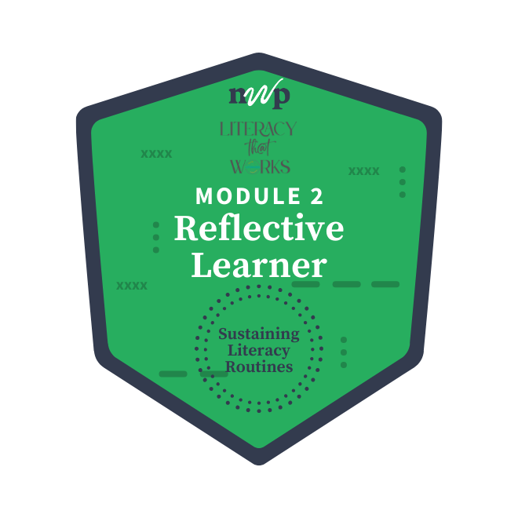

Home

Name: Donna Bone
Badge: Joining a Conversation
What is one insight you gained from completing the Atwoodian Table yourself that might shape how you introduce it to students?:
I like how the Atwoodian Table makes complex ideas easier for students to comprehend. I plan to introduce complex ideas by using the table to help them visualize the idea in a more structured format, and this end result will aid in critical thinking, discussion as well as improved writing.
How does the Atwoodian Table idea compare to how you have taught argument and/or responding to multiple texts in the past?:
The Atwoodian Table can be used as a thinking tool for prewriting. Ideas, instead of one large component can be broken down into categories. The Atwoodian Table is based off of visual and structure.
What do you notice about the two sets of excerpts in this module (children in fancy restaurants and toddlers and technology)? How do the excerpts work together to invite students to join the conversation? What are some conversations related to topics you teach?:
Both passages involve expectations and what is appropriate behavior for young children, and how adults manage behavior. Students can offer different perspectives, realize there is not just one correct answer. Students are able to feel like their opinion matters. Some conversations we've had include screen time, bed times, should 15 year olds be aloud to drive without an adult.